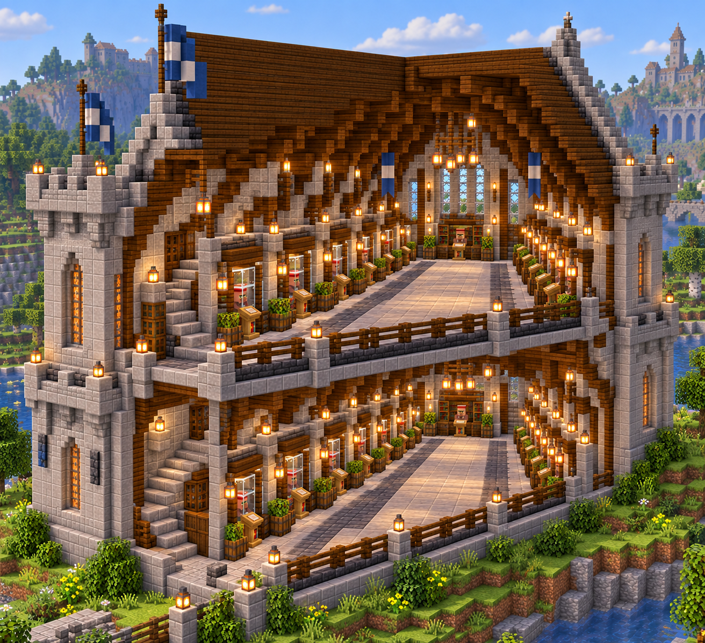
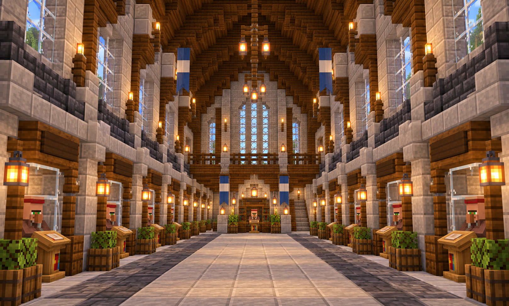
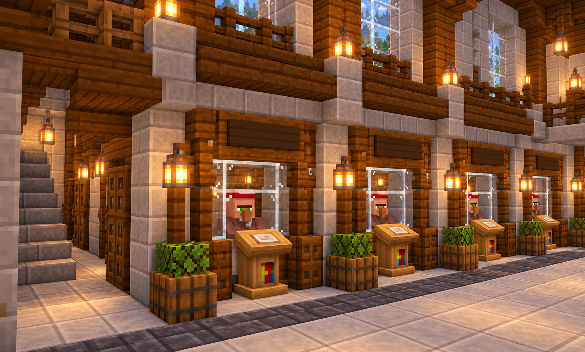

Stonewatch
Library
A two-floor castle trading hall for exactly 40 librarians: 20 per floor, ten booths down each side of a central aisle.

One complete hall, two working floors
Entrance faces north at Z=0. X increases east, Z increases south, and Y increases upward. Local Y=0 is your ground floor. Add your world origin to each coordinate.
The center aisle is X=13–15. Rear service corridors are X=5–7 and X=21–23. Each booth has a rear door and a one-block lectern inside its pen. Both service corridors join the central aisle at Z=49.
Ground floor · 20 named booths
Labels are the highest enchantment levels in the local Java 26.3 normal-trade list. Write the name and level on each booth sign after you confirm its villager's trade.
How the booth actually works
- Villager stands inside the 5 × 3 booth. Lectern is one block in front of it, reachable for restocking.
- The aisle-facing center is glass, with a sign above. The rear door opens into the service corridor so you can reroll or replace one villager without opening the public aisle.
- Build the stone and wood shell first. For each booth, leave its rear door gap open, place its lectern, guide in one unemployed adult villager, and close the two-block door. Confirm the desired book, trade once to lock it, then write the name and level on the sign. Set up one booth at a time so villagers link to the intended lectern.
- Ground-floor stairs start at X=13–15, Z=50 and reach the upper landing at Z=56. The upper return gallery at X=18–20 leads back to the second-floor aisle.
Read the images as inspiration
The third close-up suggests the booth finish. The plans above specify the complete rear access and the exact 40-booth count.


Layer Y=0
Full slice, fitted to your screen: Z runs left to right; X runs top to bottom.
0 placed spaces
| Block item | This layer |
|---|
All placed items
Counts come from the coordinate model. One door item creates its two listed block halves. Bring some extra stone and wood for temporary scaffolding.
| Vanilla item | Items | Stacks + extra |
|---|
Placement rows · Y=0
Each row is an uninterrupted X range at one Z coordinate. The CSV gives every single X, Y, Z and vanilla block ID. Finish deferred doors, lecterns and labels during villager setup.
| Z | X | Block ID and state | Purpose | Qty |
|---|